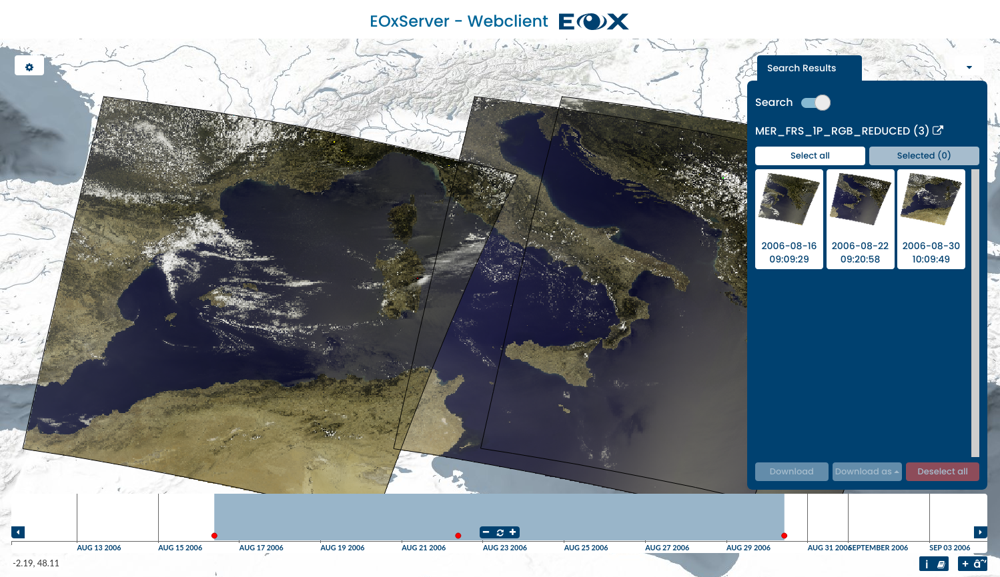

EOxServer¶
Névjegy¶
Az EOxServer egy kiszolgáló nagy földi megfigyelési (EO) adatarchívumok és metaadatok megjelenítésére nyílt szabványokon keresztül.
A jelenleg támogatott Föld-megfigyelési adatok a 2D-s raszter adatokat foglalják magukba, amelyeket általában műholdakra vagy repülőgépekre telepített szenzorokkal gyűjtenek, és tartalmazza a felvétel idejéről és a kiterjedéséről szóló információkat. Ezt általában a Föld természetes és épített környezetének megfigyelésére használják.
EOxServer builds upon an Open Source stack of software which includes Python, MapServer, Django/GeoDjango, GDAL, PROJ, and a SpatiaLite or PostGIS database.
{kind=link}
Alapfunkciók¶
- EO adatok megjelenítése, szűrése, részhalmaz képzése és letöltése
- EO adat archívumok regisztrálása
- Web alapú és parancssori adminisztrációs felület
- Adatok publikálása Open Geospatial Consortium (OGC)-vel
- Web Coverage Service (WCS) 1.0, 1.1 és 2.0 & javasolt EO-WCS
- Web Map Service (WMS) & EO-WMS
- WCS-hez javasolt bővítmények: GeoTIFF encoding, vetületek (CRSs), méretezés, és interpoláció.
- Támogatott protokollok: KVP és XML/POST (a SOAP2POST Proxy-val együtt használva XML/SOAP biztosítása is)
- Publikálás a következő formátumok és csoportok felhasználásával:
- gmlcov:RectifiedGridCoverage-ből levezetett 2-D EO fedvények
- gmlcov:ReferenceableGridCoverage-ből levezetett 2-D EO fedvények
- Adatsorok mint EO fedvények sorozata pl. idősorok
- Helyesbített EO fedvények illesztett mozaikjai beleértve a contributingFootprint-et
- Támogatott fedvény formátumok:
- GeoTIFF
- GDAL könyvtár általtámogatott formátumok
Implementált szabványok¶
- WCS, EO-WCS
- WMS, EO-WMS
- WPS
- GML, GMLCOV, EO-O&M
- OpenSearch
Részletek¶
Honlap: https://docs.eoxserver.org/en/stable/
Licenc: MIT-style license
Szoftver verzió: 1.0.0RC22
Támogatott platformok: Linux, Windows, Mac
API interfészek: Python
Támogatás: https://docs.eoxserver.org/en/latest/users/basics.html#where-can-i-get-support